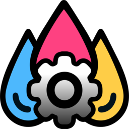
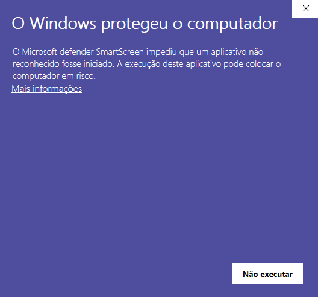
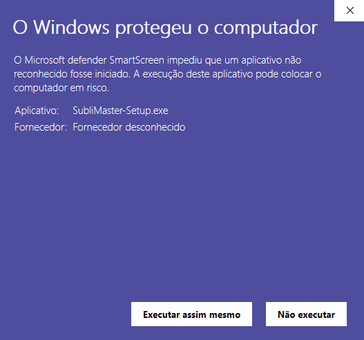

Encaixe, repasse, exporte e imprima. Tudo automatizado. Reduz horas de trabalho repetitivo a poucos cliques.
Windows 10/11 · Requer CorelDRAW Graphics Suite · v...
Como o app é novo, o Windows mostra um aviso azul. Siga os 2 passos abaixo:
Clique em "Mais informações"

Clique em "Executar assim mesmo"
